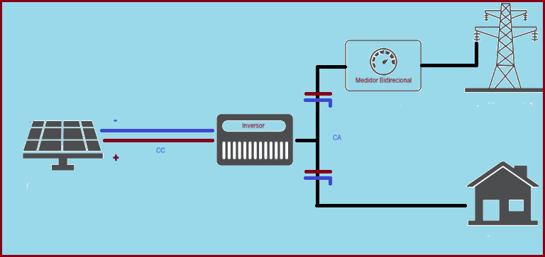

Sistemas Fotovoltaicos ONGRID ou GRIDTIE
Os sistemas fotovoltaicos on-grid ou grid-tie , ou SFCR – Sistemas fotovoltaicos conectados a rede, são aqueles que estão conectados à rede elétrica da concessionária de energia local. Nesse tipo de sistema, a rede elétrica funciona como uma espécie de “bateria”, armazenando o excesso de energia elétrica gerada pelos painéis solares.
Como isso acontece?
Após a energia gerada pelos módulos fotovoltaicos passar pelo inversor e se transformar em corrente alternada, ela supre os equipamentos elétricos em uso no momento. Se a energia gerada for maior do que a consumida pelos equipamentos, o excedente é injetado na rede elétrica da concessionária.
Essa energia excedente é convertida em créditos de energia, que podem ser utilizados pelo consumidor em até 60 meses. Por outro lado, se a energia gerada não for suficiente para suprir a demanda dos equipamentos, a rede elétrica da concessionária entra em ação e fornece a energia necessária.
Esse controle é possível graças à troca do medidor de energia convencional por um modelo bidirecional, que registra tanto a energia injetada pelo sistema solar quanto a energia consumida da rede elétrica.
